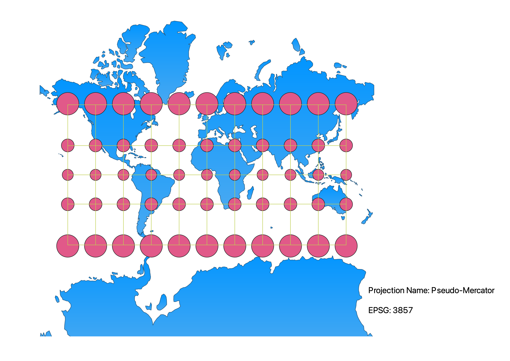
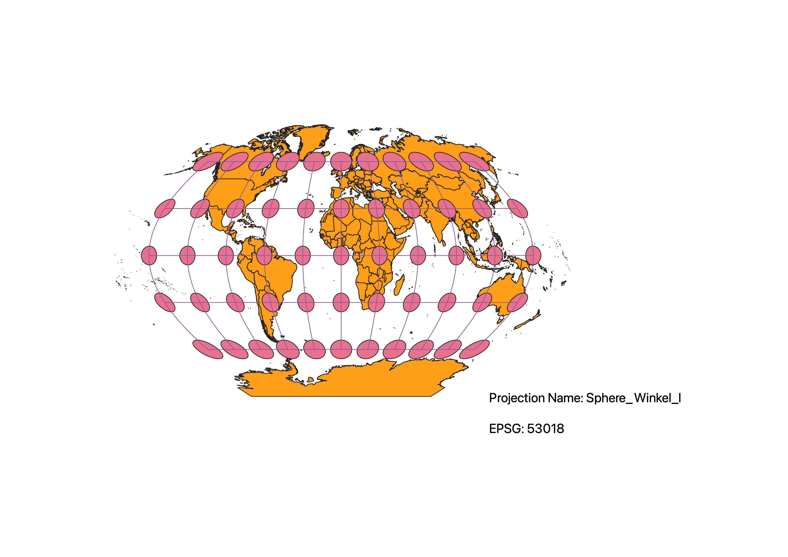
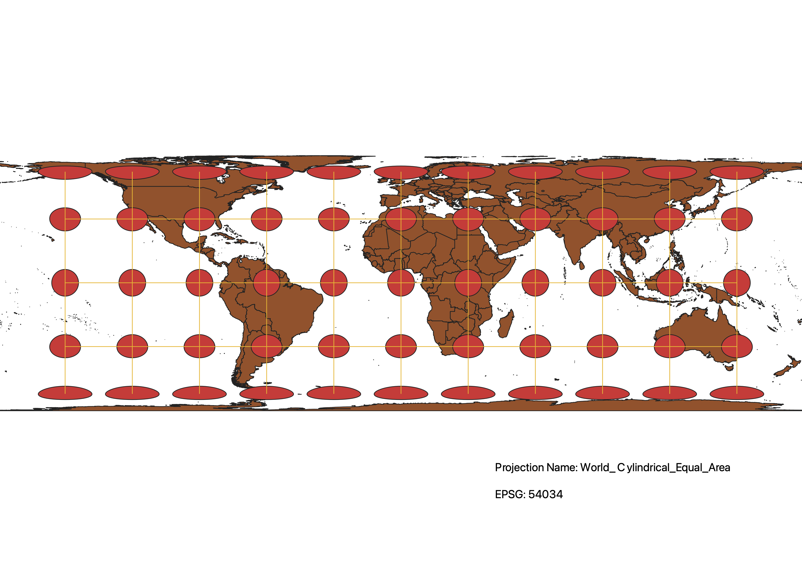
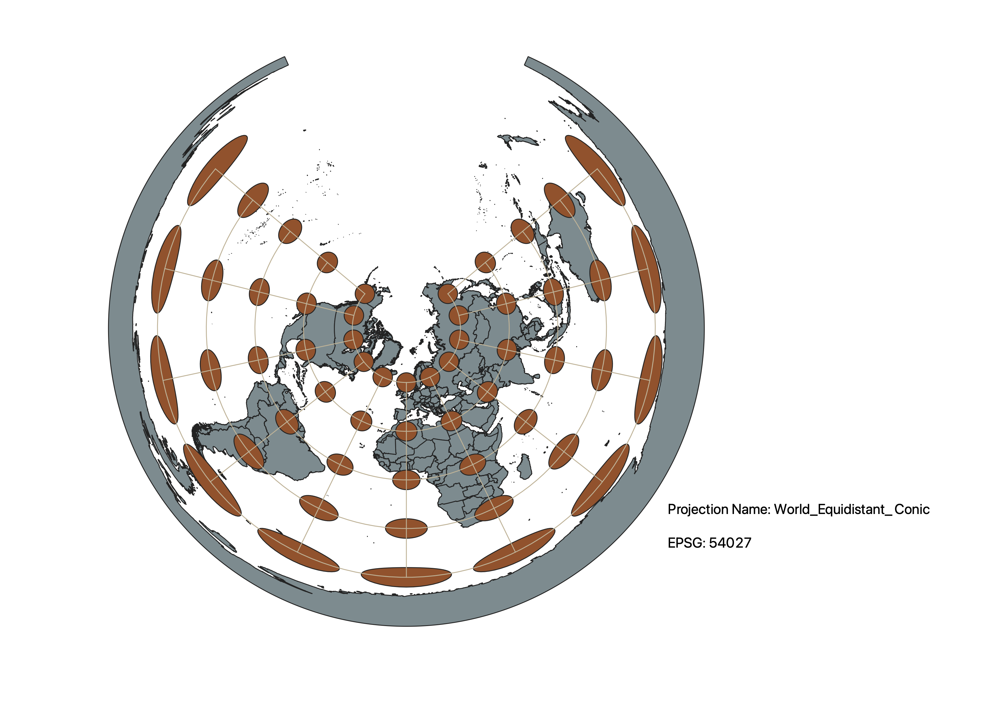
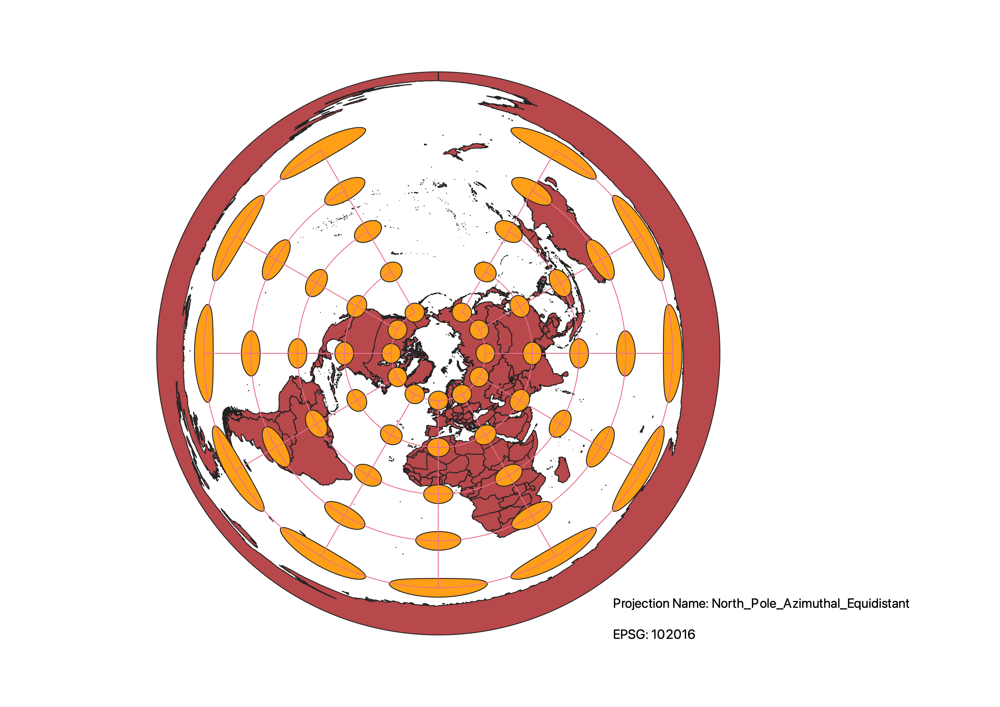
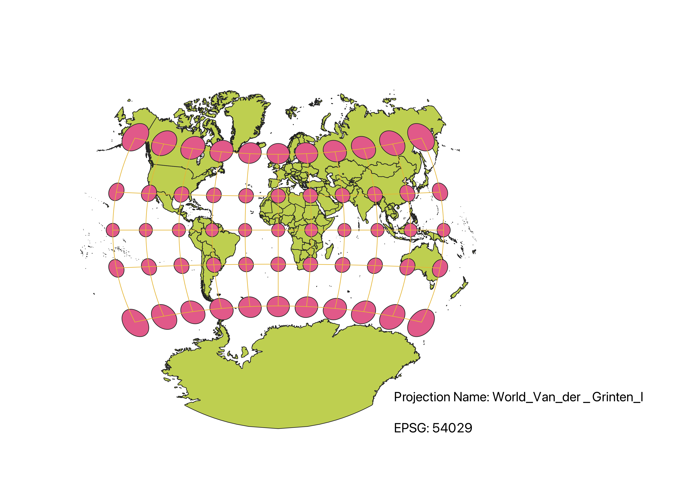
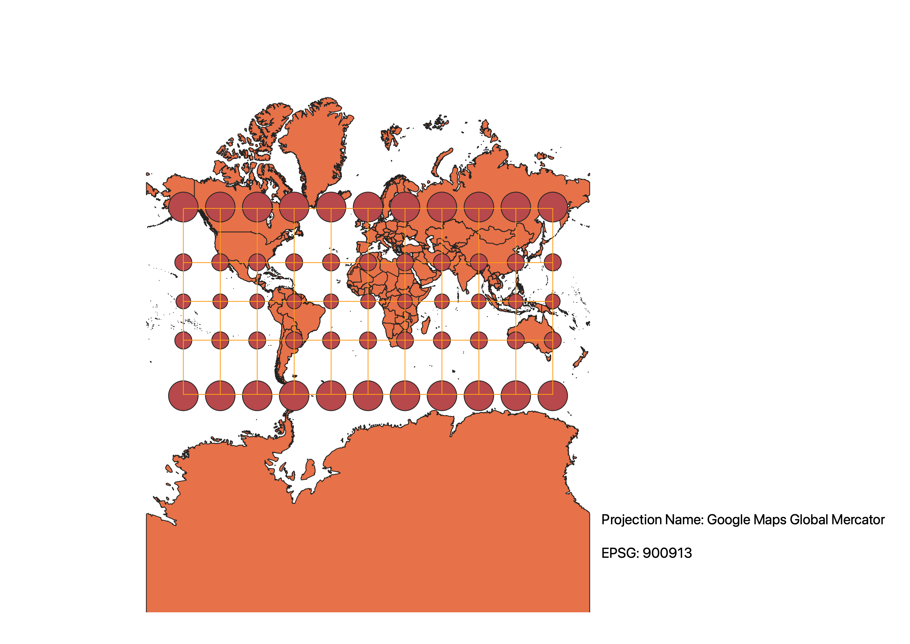

Various World Projections by Antonio Preziuso
Description of Methods Used:
To complete this homework, I utilized QGIS and a plug-in called Tissot's indicatrix. I began by using the data provided by Professor Arce-Nazario from the Natural Earth Vector dataset. Using this .shp file, I created 7 seperate maps and used QGIS's Coordinate Reference System function to change which projection was being used for each map. Using the plug-in Tissot's indicatrix, I created one layer displaying "graticule" and one layer displaying "caps." Together these two layers reveal how each projection can cause disortions in shape, area, distance, and direction. Using Layout Manager, I was able to label each map with the Projection Name and its respective EPSG number. I then exported each map as a .png, placed it in my repository on GitHub, and embedded them in this page.
WGS84 Projection
The WGS84 Projection is an equidistant cylindrical projection. By looking at the ellipses from Tissot's indicatrix on the map, we can see that both size and shape are disorted. However, distance was preserved in this projection as a constant scale was maintained between points.

Aitoff Projection
The Aitoff Projection is a compromise projection. Therefore, shape, area, distance, and direction are all disorted to some degree. Based on my observations, this projection has similarities to azimuthal projections, however, Tissot's indicatrix reveals that the graticule have been modified into an ellipse-like shape.

Pseudo-Mercator Projection
The Pseudo-Mercator Projection is a conformal projection that conserves shape but disorts area. This is visualized by the circles from Tissot's indicatrix, which are all the same shape but of increasing size as you move toward the poles.

Sphere_Winkel_I Projection
The Sphere_Winkel_I Projection is a compromise projection. Therefore, shape, area, distance, and direction are all disorted to some degree. Based on my observations, the Tissot's indicatrix for this projection is similar to that for Aitoff's projection. Furthermore, this projection shares similarities with the equidistant cylindrical projections in terms of area.

World_Cylindrical_Equal_Area Projection
The World_Cylindrical_Equal_Area Projection is an equal-area projection that preserves area but disorts shape. This is illustrated by Tissot's indicatrix. In particular, the ellipses from Tissot's indicatrix are heavily disorted in shape as you move toward the poles. However, these ellipses are all of equal area.

World_Equidistant_Conic Projection
The World_Equidistant_Conic Projection is an equidistant projection that preserves distances. However, shape, area, and direction are all heavily disorted as you move outwards from the center of the projection.

North_Pole_Azimuthal_Equidistant Projection
The North_Pole_Azimuthal_Equidistant Projection is an azimuthal projection that preserves all distances from the center point. Furthermore, direction to all points from the center point is preserved. However, as evident in Tissot's indicatrix, shape and area are disorted.

World_Van_der_Grinten_I Projection
The World_Van_der_Grinten_I Projection is a compromise projection. Because of this, area, shape, direction, and distance are all somewhat disorted. Based on my observations of Tissot's indicatrix, this projection shares similarities in appearance to the Mercator projection except it uses curved graticule.

Google Maps Global Mercator Projection
The Google Maps Global Mercator Projection is a conformal projection that conserves shape but disorts area. Much like the Pseudo-Mercator projection, this projection has Tissot's indicatrix ellipses of the same shape but of increasing size as you move toward the poles, disorting area.

Data used for this project
Download Natrual Earth 1:10m Cultural Vector